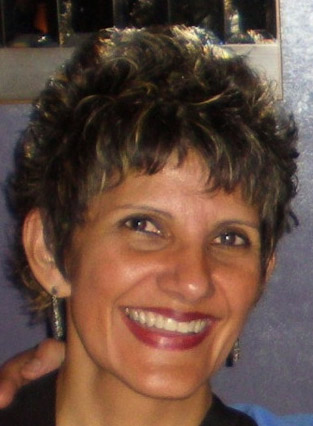

Green Focus: Three Greens are California Citizens Redistricting Commission semi-finalists
By Mike Feinstein, Green Focus. Fall 2010 issue.
Teresa España
España, of Fresno, is an adjunct faculty member in art history, appreciation and education at State Center Community College District, working at the Fresno City College, Madera and Clovis campuses and teaching on-line. She is a member of the city of Fresno’s Historic Preservation Commission and former department chief at Fresno Metropolitan Museum of Art and Science. España has been registered Green since 1992 when a graduate student at the UC Santa Barbara, where she earned a Masters in History of Art and Architecture. Before that she received a Bachelors of Arts in Political Science and Art from CSU Fresno. See España's application here.

Flashman is an Oakland attorney who specializes in environmental, land use and elections law. In his solo practice he represents private individuals, and community, environmental, and other public interest groups during administrative processes and in litigation.
Additional background: Over 30,000 people submitted initial Stage 1 applications to be on the commission (including 293 Greens), of which approximately 25,000 were deemed tentatively eligible (including 211 Greens) Of these 4,564 completed the more extensive Stage 2 application, 37 of them Greens. In early June, 2010, California’s Applicant Review Panel (ARP) reviewed these applications and narrowed down the number of applicants to 622 and then 314. Then again in July, 2010 the number was reduced to 120, all of whom were interviewed face-to-face at open public meetings in August: 40 who were registered Democrat, 40 who were registered Republican and 40 who were not registered Democrat or Republican. Among the latter group were the three Greens. Ultimately, none of them were chosen to serve on the Commission.
Please describe why you are interested in serving on the Citizens Redistricting Commission
(from the official applications to serve on the Commission)
|
Vylma L. Ortiz (Berkeley)
|
Stuart Flashman (Oakland)
|
Teresa M. España (Fresno)
|
|
I am interested in serving on the Commission because I believe in a government for the people and by the people. Every time election season rolls around people are often disappointed by the candidates running. We all have have heard or voiced complaints over the years about the quality of the candidates in public office; Yet seldom do these good people look to themselves as a solution. Do they take the leap and throw their hat in the ring and decide "Okay, I am going to run for that position". A few do, but many more don't. I think it has a lot to do with courage and not letting money and other barriers keep one from fully engaging in the political process. This is what we need in this commission, average Californians willing to get involved in order to effectuate real change. We can't keep complaining about the state of things with no corresponding action. We need people willing to step up and serve. I like the way that the Redistricting Commission has been structured. I think it is an honest effort to draw new people into the political process and to try to ensure that district lines are drawn as accurately and fairly as possible. I was genuinely affected by the ads that ran stating how important it was that this commission represent the diversity and richness of this state. Yet it is so easy to look to others to do that representing! But from jury duty to helping out at your local school or senior center, there are things that we all must do from time to time in order to keep our good state running. I have nothing against long time politicians and value their expertise, but such skills are best balanced with people who, although they may lack knowledge of the political process, are real experts in what the everyday Californian is experiencing. Politicos can and do become removed from the everyday struggle of what it is like for the average Californian to live, work and do business in this state. Keeping district lines static and unchanging results in politicians with the same characteristics. Drawing district lines fairly to reflect naturally changing demographics and shifts in population is simply good Democracy at work. I don't believe that it is a good thing that our incumbents get re-elected 80% of the time. Of course, if someone is popular and has a crowd of happy constituents behind her/him, then they should maintain their positions. Yet some of these districts can be so oddly drawn that you cannot help but start believing the old adage that the candidates are choosing their voters (rather than the other way around), and something needs to be done. I want to help do that something, that's why I am interested in becoming a member of California's Citizen Redistricting Commission.
|
Having lived in California for thirty years, I have come to appreciate both its diversity and the difficulty in achieving the fair representation of all Californians that is necessary for Californians to have confidence in their representatives and their state government. To put it bluntly, the current system, where the legislature determines its own district boundaries, was broken. Boundaries were drawn to protect incumbents and to further narrow political aims. As a result, many Californians have lost confidence in the legislature and state government. I believe I have both the appropriate skill set and appropriate motivation to help in the process of designing an objectively neutral and trustworthy set of state district boundaries. In doing so, I think I would be helping to bring California back onto the forward-moving path that Californians want their state to be on. If I can help in doing that, it would be worth all the work and frustration that I'm sure it would entail.
|
My interest in serving on the Citizen's Redistricting Commission arises in large part from my respect, regard and passion for family and country. Both my maternal and paternal grandparents left their country of origin (Mexico) at a young age so that they and their descendants could freely pursue happiness and meaningful economic, professional and educational opportunities in the United States.
My maternal grandparents -- Rafaela and Candelario Mora -- immigrated to America from Michoacan, Mexico in the 1920s. They were uneducated and poor when they arrived but in spite of that, they eventually built a successful family tortilla business in Fresno’s Chinatown. Their ambition, courage, and enthusiasm for our system of government -- and way of life -- made a deep and lasting impression on me as a young girl. My grandmother’s favorite day of the year was the Fourth of July and my grandfather’s was election day. They never took living in the U.S. for granted and taught me that residing in a democracy came with responsibilities. Democracy was secured and made permanent, I learned, through active participation in the political process. Those lessons inspired me to study political science as an undergraduate student and to remain a life-long political activist. The strength of our nation lies in protecting and ensuring the integrity of our political process. In 2009, I traveled to the nation’s capital and witnessed firsthand the peaceful transfer of presidential power. That experience deepened my commitment to actively safeguard our way of life. I am inspired by the courage and wisdom of Californians to propose and pass Proposition 11. For too long we have endured a legislative redistricting process that has failed the test of fairness and eroded our confidence in government. I am excited about the possibility of contributing to the important business of re-drawing Senate, Assembly and State Board of Equalization districts in a manner that is fair, open and impartial. I posses skills, abilities and experiences that would make me an important contributor to the commission. As a woman, Latina, resident of a diverse, politically moderate region, and member of California’s Green Party for nearly eighteen years, I bring an independent and salient perspective to the political process. I have experienced on an intimate level a system that doesn’t fairly or adequately represent all voices. I am firmly committed to promoting and guaranteeing a transparent and inclusive redistricting process. I’ve had a wealth of professional and volunteer experiences (museum department head, college instructor, member of Historic Preservation Commission and San Joaquin River Parkway Education Advisory Board) that have enhanced my abilities to work effectively as a member of a team, agreeably and professionally lead meetings and discussions, make assessments based on the analysis of complex data, easily work on both Windows and Macintosh computer platforms, write and communicate in an easy-to-understand manner, use legal data to form opinions, and creatively problem-solve. I would be honored to help restore integrity to California’s redistricting process. |

We welcome all Californians who share the Green vision.
Join us in creating a new politics.
GREEN PARTY OF CALIFORNIA
PO Box 485
San Francisco, CA 94104
(916) 448-3437